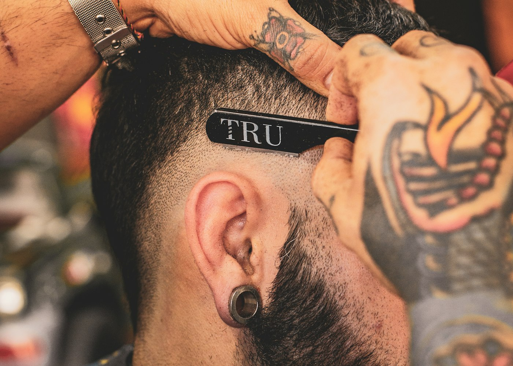
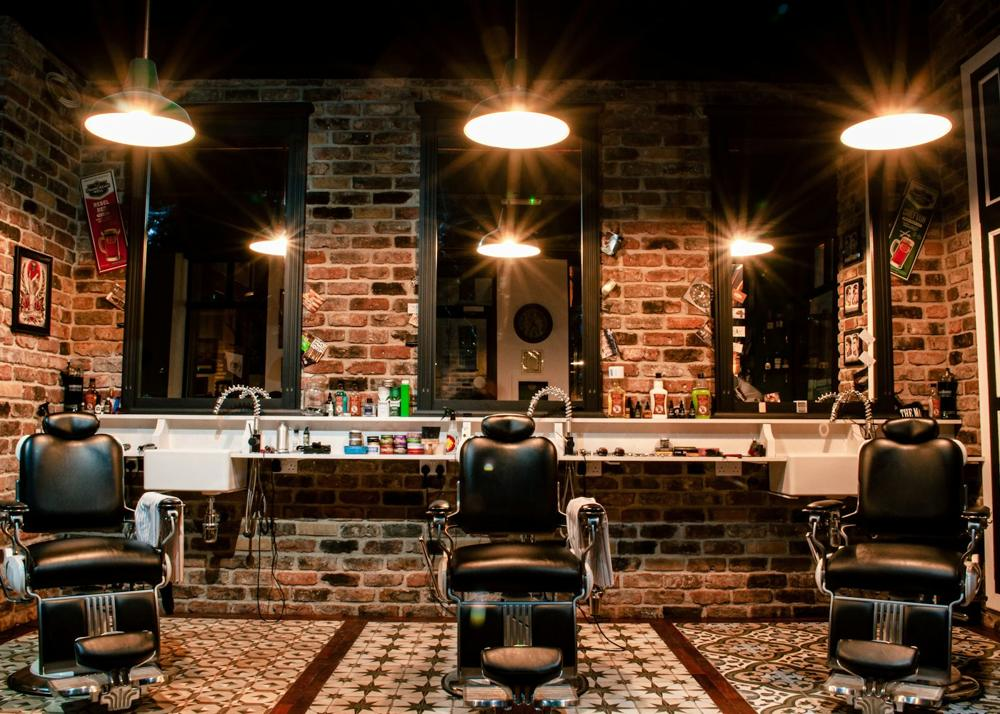
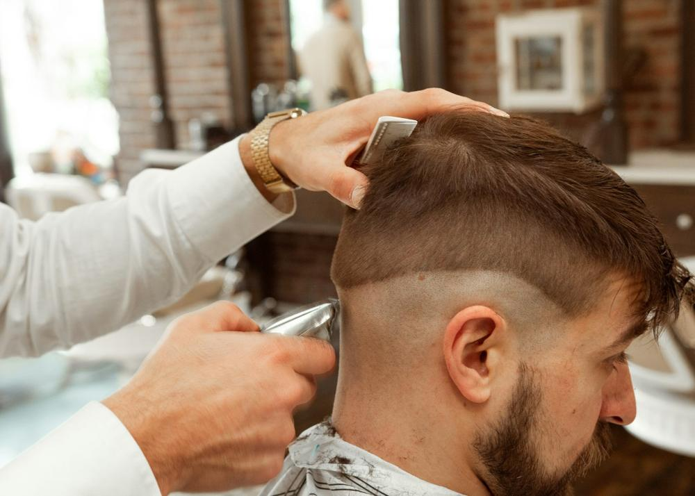
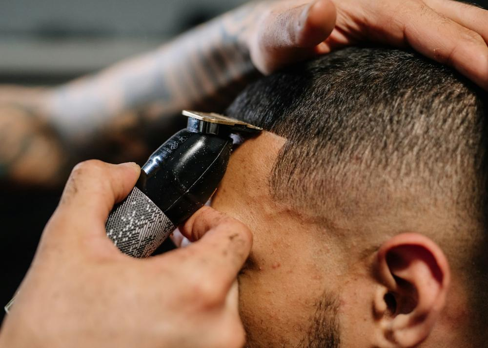

Corte masculino
Do clássico ao atual, com acabamento preciso.
R$ 55BARBEARIA • RIBEIRÃO PRETO
Cortes precisos, barba impecável e uma pausa merecida no seu dia.
Nossa essência
Na Black Beard, cada atendimento começa com uma conversa e termina com um visual feito para você. Poltronas confortáveis, café fresco e profissionais que conhecem o ofício.
Tabela da casa
Valores de referência. Combos e planos mensais direto com o barbeiro.
Do clássico ao atual, com acabamento preciso.
R$ 55Toalha quente, navalha e cuidado completo.
R$ 45O ritual completo para sair renovado.
R$ 90Ajustes rápidos para manter tudo em dia.
R$ 20Disfarce sutil, resultado natural.
R$ 50Hidratação para cabelo e couro cabeludo.
R$ 65Por dentro do clube
Cadeira confortável, café passado e navalha afiada.





Como funciona
Encontre o cuidado que combina com sua rotina.
Converse com a equipe pelo WhatsApp.
Chegue, relaxe e deixe o resto conosco.
Em destaque
Especialista em cortes clássicos e acabamento de precisão.
Barba, navalha e rituais de cuidado.
Ter–Sex: 10h–20h · Sáb: 9h–18h
Quem viveu, recomenda · 4.9/5
“É o único lugar em que corto o cabelo sem precisar explicar duas vezes o que quero.”
Rafael M., cliente há 3 anos
“Ambiente muito bom, café fresco e o degradê saiu perfeito.”
“Levei meu filho para o primeiro corte e ele já quer voltar.”
Antes de começar
Recomendamos agendar para garantir seu barbeiro e horário preferidos.
Terça a sexta, 10h às 20h; sábado, 9h às 18h.
Vamos conversar
Escolha o horário e o barbeiro. A gente confirma pelo WhatsApp.
Conversar no WhatsApp ↗